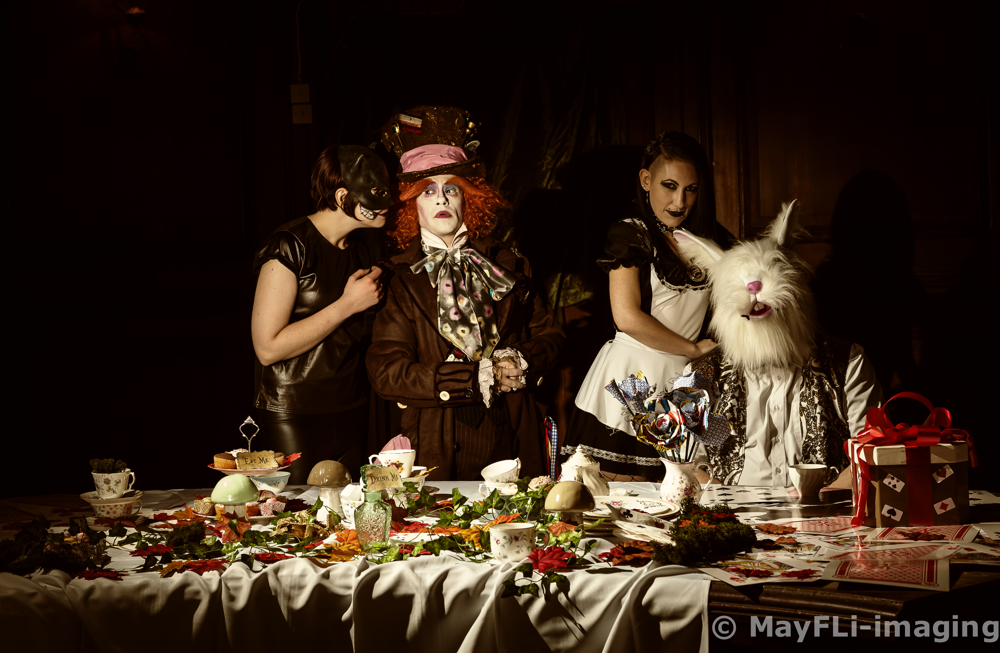
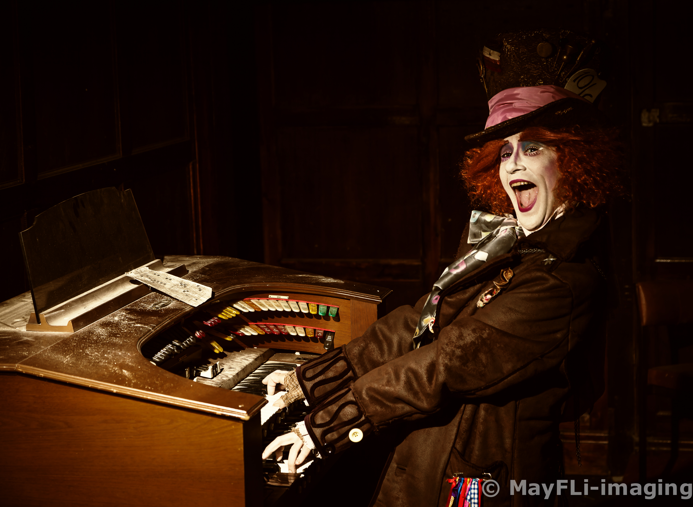
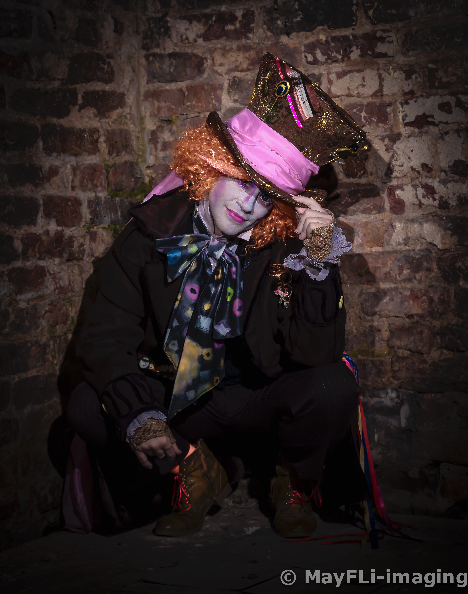

WooltonHall - Photo: Terry O'Callaghan
Location
Woolton Hall, Liverpool
Cast
Mad Hatter: Jack Cutler • Cheshire Cat • Hanna M.
Bad Alice: Cath Garrett • White Rabbit: Ian A.
Crew
Myself - Project manager, photographer, prop maker, source and lighting tech.
Wendy Turner - Photographer, prop source and location scout.
Richard Larson - Photographer and lead lighting tech
Ian A. - Photographer, lighting tech and stand-in model.

Caravaggio - The Supper at Emmaus
The Idea
The mad Hatter’s tea party in old master style. This was the first concept shoot I organised from planning to completion.
The Prep
before the shoot: We had to source and make the props required, Wendy and I sourced the tea set, mushrooms, flowers, tablecloth, flowers, cakes and boxes. I made the large sugar cubes, playing card flowers several weeks before the shoot. Ian provided most of the lighting and we shared transport for ourselves and the models.
Day of shoot
It was a cold damp day so we couldn’t wait to get inside the mansion after the drive. When we got there we had to wait a while for the caretaker to let us in, once through the gates it was a long driveway up to the house, lots of abandoned objects in the undergrowth, when we go there we unpacked everything into the massive hallway and the musty smell hit us in the face as we swung the large black and gold doors inwards. We originally wanted to do about three set ups throughout the hall but found that only one or two electrical sockets worked so had to replan everything around using flashguns. The models went to find a room to get ready upstairs, three of us went to start setting up the main shoot, we had to move furniture around making sure we remembered how they went so we could put them back after we finished. It was warmer outside than in the hall so we had to nip out to get warm. It took longer than we expected to set up, unpacking all the props, arranging them, then setting up the lights and testing them, when we did we had problems with flashes not firing or communicating with the triggers. Finally, when we were ready, the models were called (they had issues of their own with no electricity to power the stylers. With the set in place and the models ready we got underway. Which went pretty smoothly apart from one of the models letting us down so Ian, one of the photographers volunteered to be the white rabbit.
Final Artwork
The Tea Party - © May Fung Li
Once I was happy with the main shot I started taking incidentals from areas around the hall, we moved from room to room exploring the mansion and used any suitable items as props. This also meant carting all the lighting gear with us as we went.
All-in-all it was a fantastic experience.
Cat, Hatter and Bad Alice - © May Fung Li

Name That Tune - © May Fung Li

How Do You Do - © May Fung Li